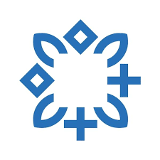

Frontend Web Developer
I develop responsive, maintainable websites and web apps using clean code and performance best practices.
Frontend Developer focused on building responsive, high-performance web applications with HTML, CSS, JavaScript, and React. I translate design concepts into accessible, user-centered interfaces delivering reliable cross-browser experiences.
I develop responsive, maintainable websites and web apps using clean code and performance best practices.
I design brand-consistent visuals for digital and print media with a strong focus on clarity and impact.
I create intuitive user flows and modern interfaces that improve usability, engagement, and overall product quality.
Professional Overview
Results-driven Frontend Developer with hands-on experience building responsive, high-performance websites and web applications. I work confidently with HTML, CSS, JavaScript, and React to create intuitive, visually engaging user interfaces. My approach combines clean implementation, API integration, accessibility, and cross-browser compatibility to deliver reliable user experiences.
Frontend Web Developer
Graphic Designer
Virtual Assistant
UI/UX Designer
Core Competencies
Academic Background

B.Sc. Computer Science Engineering
Selected Work
Focus: Modern UI, responsiveness, and brand consistency
Focus: Product showcasing and clean catalog architecture
Focus: Personal branding, performance, and accessibility
Community Involvement